01
Mid-market enterprises
Businesses at the inflection point: proven model, proven track record, and a capital structure that no longer fits the plan.

Sector expertise
We focus on a specialised or niche strategy: the sectors where we have in-depth knowledge, and where our information is better than the market's.
Practices
This philosophy typically implies a bottom-up approach, focusing on fundamentally sound, often under-researched companies rather than broad market trends.
Select a practice
Practice 01
Advisory and financing services for civil infrastructure and transport networks. We focus on leveraging private capital to close infrastructure funding gaps, with a particular emphasis on public-private partnerships that bring government entities and private investors into the same structure.
Practice 02
Capital structuring for upstream and midstream operations, joint venture facilitation, and asset positioning in both frontier and established basins.
Practice 03
Funding solutions across solar, green hydrogen and next-generation platforms, working alongside developers, institutional investors and export credit agencies to close the gap between project viability and bankable structure.
Practice 04
Sanitation solutions, water-conservation systems and environmentally responsible infrastructure addressing pressing resource challenges in emerging markets.
Practice 05
Funding capital for mid-market companies at the inflection point: businesses with a proven model and track record that need more than capital: they need a strategic partner who brings operational efficiency, market expansion and governance.
Client focus
Mid-market enterprises, multinational corporations, institutional investors and export credit agencies.
01
Businesses at the inflection point: proven model, proven track record, and a capital structure that no longer fits the plan.
02
Corporates entering or restructuring positions in frontier and emerging markets, where local execution decides the outcome.
03
Funds seeking risk-adjusted returns with adjustable risk-return profiles, and access to deal flow in markets conventional firms pass over.
04
ECAs working with sponsors to close the gap between project viability and bankable structure.
Next step
Tell us what you are structuring, sourcing or financing. The first conversation is a scoping conversation, not a pitch.